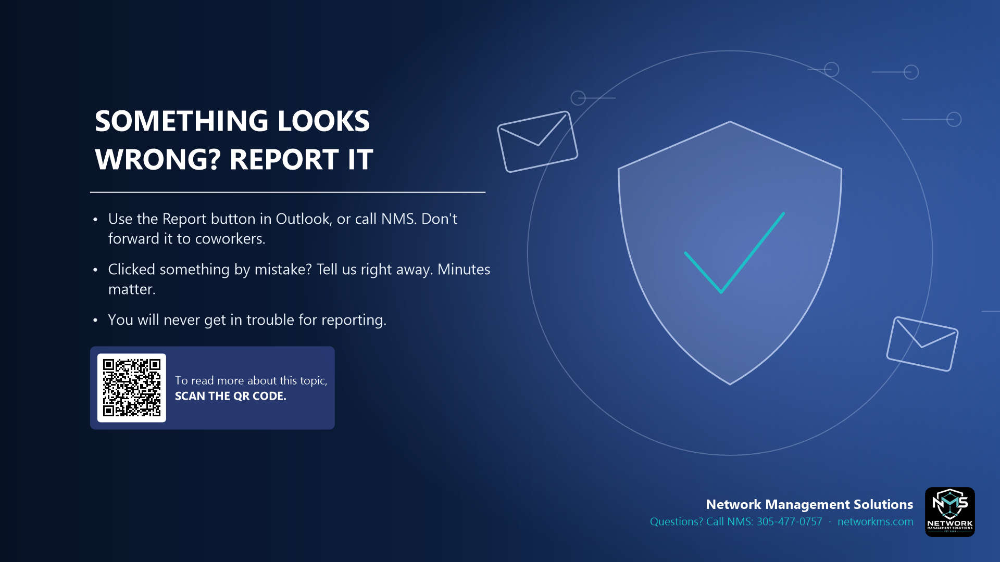

Something looks wrong? Report it

- Use the Report button in Outlook, or call NMS. Don't forward it to coworkers.
- Clicked something by mistake? Tell us right away. Minutes matter.
- You will never get in trouble for reporting.
Reporting a suspicious message helps protect everyone in the company. In Outlook, use Report > Phishing (or Report Message). If you are not sure, call NMS.
If you clicked a link, typed your password or opened an attachment, call us immediately. The sooner we know, the faster we can lock the account and stop the damage.
Nobody gets in trouble for reporting, even if it turns out to be safe.
Not sure about an email, text or call? Call NMS before you click: 305-477-0757 · networkms.com